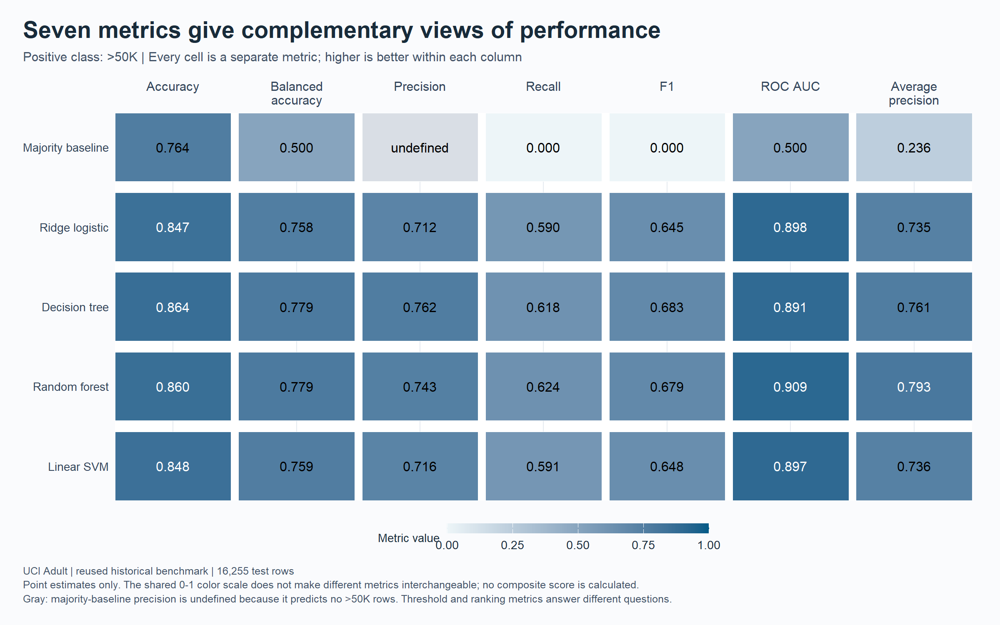
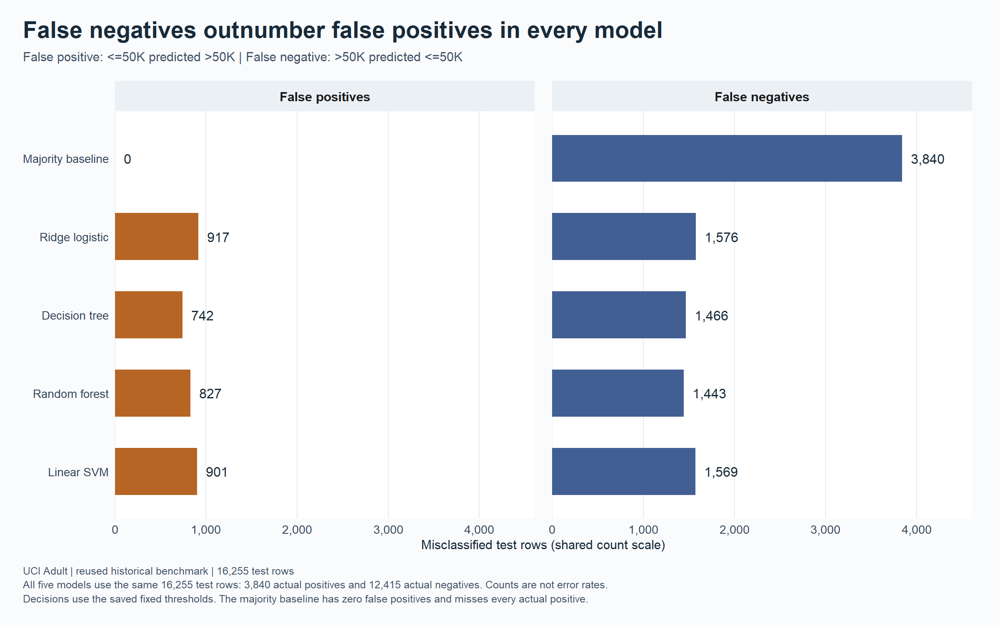
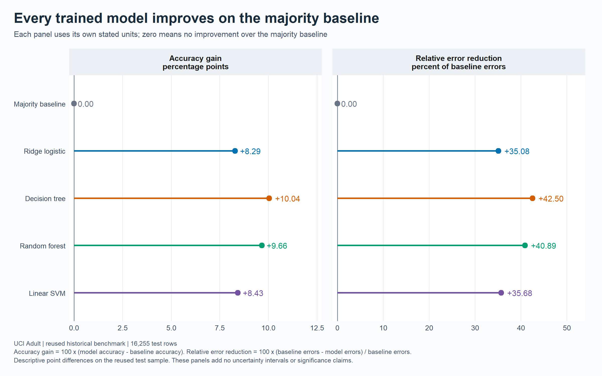
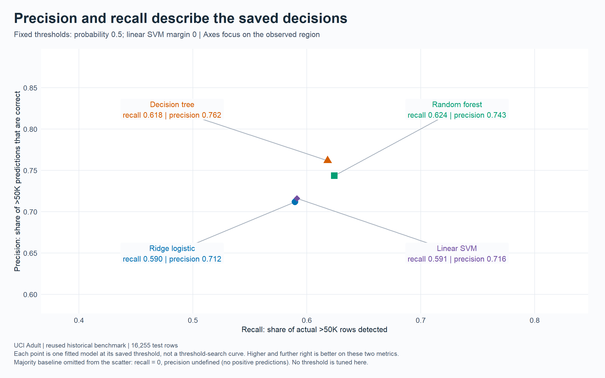
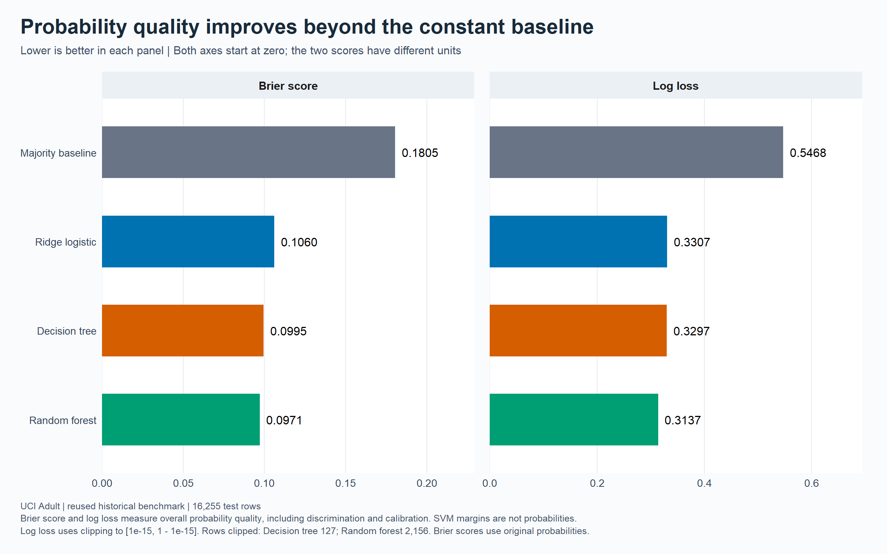
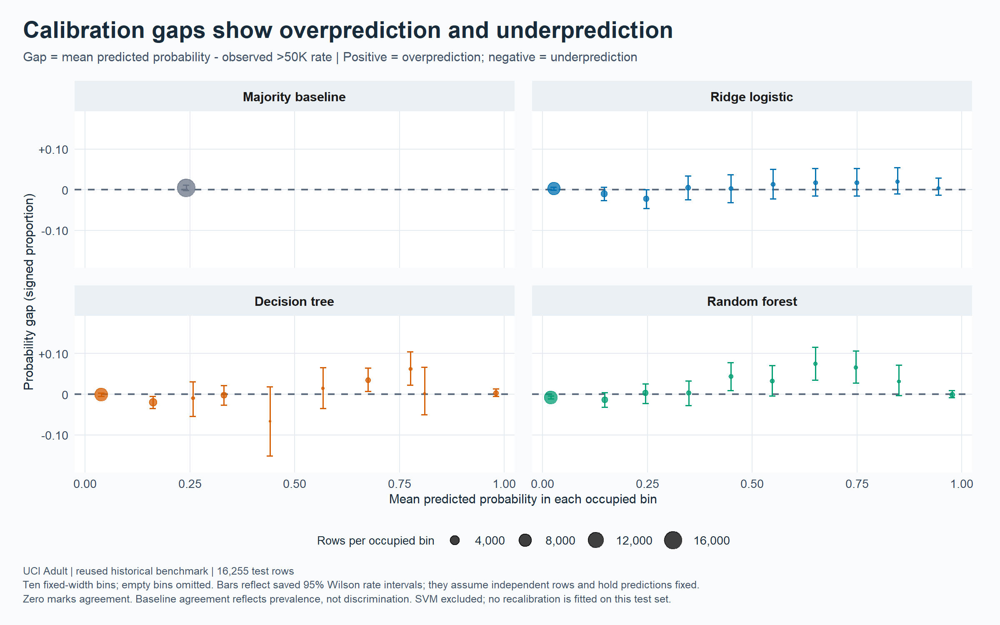
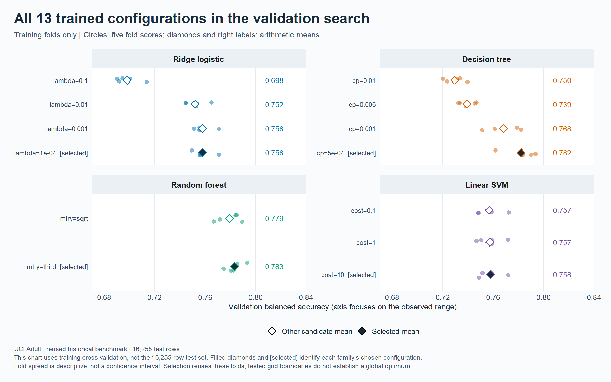
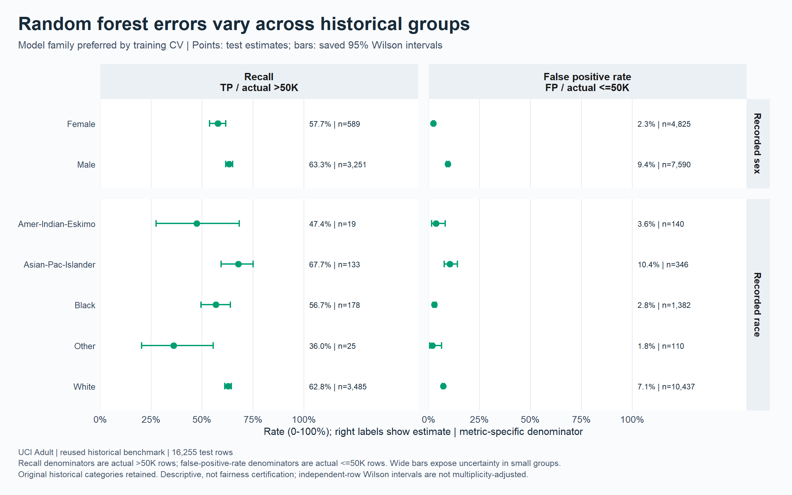
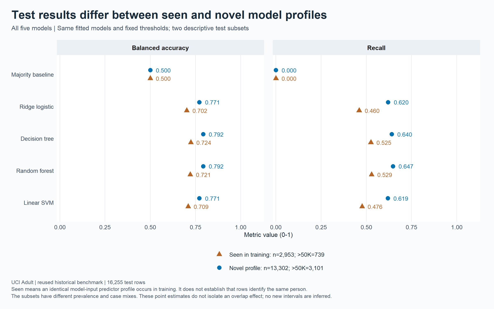
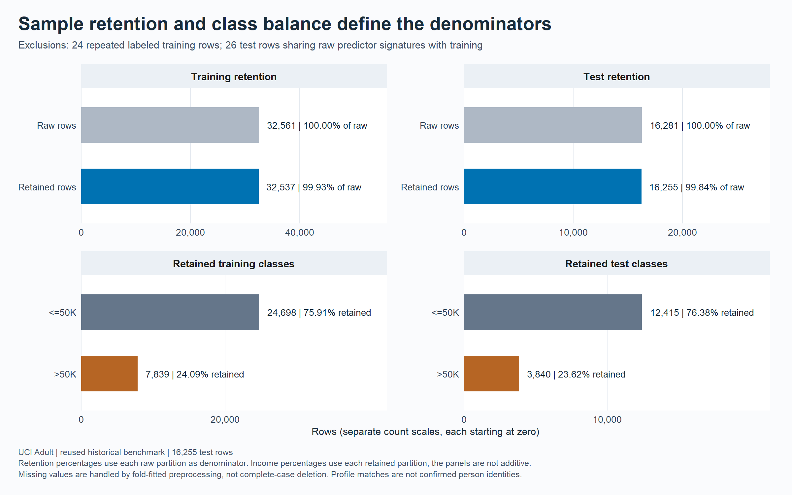

R / ggplot2 / historical Adult benchmark
What the income classifiers get right and miss
Ten additional views of the recorded version 2 results: 16,255 test records, 23.62% in the >50K class, five model families, and fixed classification thresholds.
Download the ten-page chart book (PDF) | Summary statistics | CSV downloads
These are unweighted summaries of a reused historical UCI Adult benchmark. No models were fitted and no bootstrap intervals were recalculated for this supplement. Existing bootstrap intervals condition on fitted models and this sample; they omit training and selection uncertainty. Group and calibration intervals are the published descriptive Wilson intervals. Group comparisons do not establish fairness or causal discrimination. Matching profiles do not identify people.
Findings supported by the saved results
- The decision tree made 2,208 classification errors, versus 2,270 for the forest. Its error count was 42.5% lower than the majority baseline's.
- The forest had the highest observed ROC AUC (0.9090) and average precision (0.7933). Its 62.42% recall still left 1,443 of 3,840 >50K records undetected.
- Relative to the tree, the forest found 23 additional positive records and produced 85 additional false positives at the fixed thresholds.
- Training cross-validation preferred the forest by 0.095 percentage points of mean balanced accuracy over the tree. These are selection scores, not independent performance estimates.
- The tree-minus-forest test balanced-accuracy difference was 0.043 percentage points; the saved conditional 95% paired interval was -0.523 to 0.626 points. It includes zero and does not establish equivalence.
- Probability error, calibration, classification, and ranking describe different properties. A constant prevalence predictor can have a small binned calibration error while providing no ranking information.
Model results and additional statistics
| Model | Accuracy | Balanced accuracy | Precision | Recall | ROC AUC | Average precision | Errors |
|---|---|---|---|---|---|---|---|
| Majority baseline | 76.38% | 50.00% | Not defined | 0.00% | 0.5000 | 0.2362 | 3,840 |
| Ridge logistic | 84.66% | 75.79% | 71.17% | 58.96% | 0.8980 | 0.7354 | 2,493 |
| Decision tree | 86.42% | 77.92% | 76.19% | 61.82% | 0.8910 | 0.7615 | 2,208 |
| Random forest | 86.04% | 77.88% | 74.35% | 62.42% | 0.9090 | 0.7933 | 2,270 |
| Linear SVM | 84.80% | 75.94% | 71.60% | 59.14% | 0.8968 | 0.7357 | 2,470 |
| Model | Errors per 1,000 | Error reduction vs baseline | Negative predictive value | MCC | AP / positive prevalence |
|---|---|---|---|---|---|
| Majority baseline | 236.2 | 0.0% | 76.38% | Not defined | 1.00 |
| Ridge logistic | 153.4 | 35.1% | 87.95% | 0.552 | 3.11 |
| Decision tree | 135.8 | 42.5% | 88.84% | 0.603 | 3.22 |
| Random forest | 139.6 | 40.9% | 88.93% | 0.594 | 3.36 |
| Linear SVM | 152.0 | 35.7% | 88.01% | 0.556 | 3.11 |
| Model | Brier score | Log loss | Binned ECE | Occupied bins | Clipped probabilities |
|---|---|---|---|---|---|
| Majority baseline | 0.1805 | 0.5468 | 0.47% | 1 | 0 |
| Ridge logistic | 0.1060 | 0.3307 | 0.79% | 10 | 0 |
| Decision tree | 0.0995 | 0.3297 | 0.91% | 10 | 127 |
| Random forest | 0.0971 | 0.3137 | 1.48% | 10 | 2156 |
Undefined baseline precision and MCC remain missing. SVM margins are excluded from probability scores and calibration. Small ECE for the majority baseline reflects prevalence matching, not discrimination.
Charts keep the same proportions at every screen size. Select any chart to open its full-resolution image.
Seven metrics give complementary views of performance
Read a column down to compare models on that metric. Values across unlike metrics are not a composite ranking.


False negatives outnumber false positives in every model
Compare error types within a model, then compare models on the common count scale. Different actual-class sizes prevent reading counts as rates.


Every trained model improves on the majority baseline
The left panel measures absolute accuracy improvement; the right panel measures the fraction of baseline mistakes avoided. Units differ.


Precision and recall describe the saved decisions
Higher precision and recall describe this fixed decision rule. The chart does not tune thresholds or establish a superior threshold policy.


Probability quality improves beyond the constant baseline
Lower values are better within each score. Probability quality includes both calibration and discrimination; clipping affects log loss.


Calibration gaps show overprediction and underprediction
Positive gaps indicate overprediction and negative gaps underprediction. Large intervals signal sparse bins; a constant baseline can match prevalence.


All 13 trained configurations in the validation search
Selected means maximize the declared training-CV selection metric within each family. Fold spread is descriptive and selection-biased, not a confidence interval.


Random forest errors vary across historical groups
Group estimates describe this historical sample. Inspect interval width and positive/negative denominators before comparing rates; this is not fairness certification.


Test results differ between seen and novel model profiles
The profile subsets differ in case mix and prevalence. Their differences do not isolate causality or show that matching records are the same people.


Sample retention and class balance define the denominators
Each retention share is relative to raw rows, while class shares are relative to retained rows. Counts across these panels should not be summed.


Download the statistics
Definitions and interpretation limits
- Error reduction: 100 x (baseline errors - model errors) / baseline errors. Accuracy gains are percentage-point differences.
- Errors per 1,000: 1,000 x (false positives + false negatives) / evaluation sample size. These are sample summaries, not projected deployment counts.
- MCC: (TP x TN - FP x FN) / sqrt((TP+FP)(TP+FN)(TN+FP)(TN+FN)). Undefined denominators remain missing.
- Negative predictive value: TN / (TN+FN). False discovery rate: FP / (TP+FP). False omission rate: FN / (TN+FN). These depend on sample prevalence.
- Average-precision lift: average precision / observed positive prevalence. The baseline is the constant-score average precision; this is not a top-k lift statistic.
- Brier skill versus baseline: 1 - model Brier score / majority-baseline Brier score. It measures relative squared probability error on this sample.
- Binned ECE: sum over occupied bins of (bin size / total size) x absolute(mean prediction - observed rate), using the original ten fixed probability bins. It is bin-dependent and can hide within-bin errors; it is not an overall model ranking.
- Calibration gap: mean prediction - observed rate. Positive values indicate overprediction in that bin. Displayed limits transform the existing Wilson interval for the observed rate, holding the mean prediction fixed.
- CV fold points are dependent selection scores. Fold ranges and standard deviations are not confidence intervals or independent confirmation.
- Model-profile subsets have different case mixes. Their score differences do not measure the effect of removing duplicates or prove leakage.